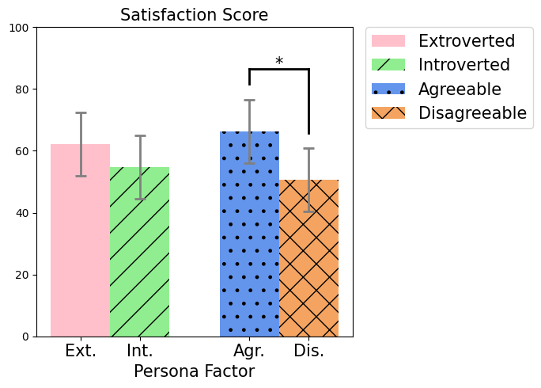
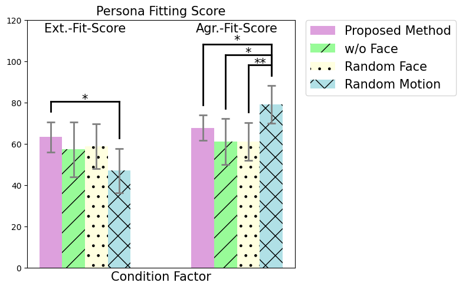

Additional Results
Number of Participants in Phase 1
Number of Participants in Phase 2
Number of Participants in Pre-studies & Ablation Studies
| Number of Participants | Extroverted Persona | Introverted Persona | Sum |
|---|---|---|---|
| Agreeable Persona | Extroverted and Cooperative (13) | Introverted and Cooperative (13) | 26 |
| Disagreeable Persona | Extroverted and Uncooperative (13) | Introverted and Uncooperative (13) | 26 |
| Sum | 26 | 26 | 52 |
| Minions | Cowardly Lion | Scrooge | Spock | Total | 27 | 27 | 27 | 27 | 108 |
|---|
| No Facial Expression (Screen off) | Random Facial Expression | Random Motion | Total | 16 | 28 | 28 | 72 |
|---|
Phase 1 - Personality Identification
Phase 1 - Satisfaction

Phase 2 - Keywords for Each characters
Phase 2 - Post-study Comments
Minions
1.
Judging by the constant peek-a-boo, it seemed like a friend with a strong sense of playfulness.
Also, since it appeared to yawn when we didn't move, it seemed to get bored quickly if not engaged, representing mischief character.
Also, since it appeared to yawn when we didn't move, it seemed to get bored quickly if not engaged, representing mischief character.
2.
When I see the Minions, it look like Minions, but their large size doesn't seem to match well with my perception.
3.
At first, while being happy to meet for the first time with a mischievous expression, I chose the playful Minion because of its active interactions.
However, from the middle, it seemed to get tired or started showing expressions of annoyance, which also seems to resemble the behavior of a Minion.
However, from the middle, it seemed to get tired or started showing expressions of annoyance, which also seems to resemble the behavior of a Minion.
4.
When I only saw the arm motions, I was confused, but after seeing the facial expressions on the pad, I could clearly understand.
Cowardly Lion
1.
The response was slower than I expected, so it felt somewhat like a sloth, but it often made crying or scared expressions, which made me feel it was closer to the Cowardly Lion. It would have been more interesting if the response speed or the variety of scenarios had been more diverse.
2.
The robot seemed to interpret the action of waving arms as an act of aggression, taking a defensive posture and shedding tears as if it was afraid of humans.
3.
It seems to resemble the expressions seen on the screen, such as looking flustered, scared, or frightened. The hand gestures also appear to match the description as being defensive, but it might be difficult without the screen or hand gestures.
Scrooge
1.
I was confused between Scrooge and the Minions, but it didn't seem to act lively and spirited, so I chose Scrooge haha. Even when the robot ignores or rejects my greeting, I feel a bit upset :(.
It seems like it's because the robot appears to have its own personality!
It seems like it's because the robot appears to have its own personality!
2.
It is always angry. Normally, it reads books.
3.
It does seem to be an angry situation, but I wish there were more diverse actions! It would be nice if it responded to other actions besides just waving hands!
Spock
1.
The difference in facial expressions is not pronounced, making it difficult to discern whether the object has been recognized. It's confusing what emotion making an X sign with the hands is supposed to express.
2. I chose Spock because it is indifferent to people and dislikes approaching them. However, the expression of indifference (making an X sign with the hands) was not very delicate, causing some confusion during the experiment.
3. It seems to be rejecting people and has its mouth tightly closed, so I thought it resembled Scrooge the most.
4. It is impossible to understand the message it is trying to convey, and I am not feeling the interaction.
Pre-studies - Impact of Facial Expression

Ablation-studies - Effect of Motions and Facial Expressions
